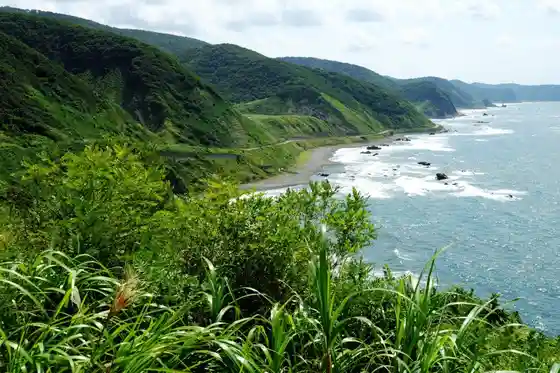
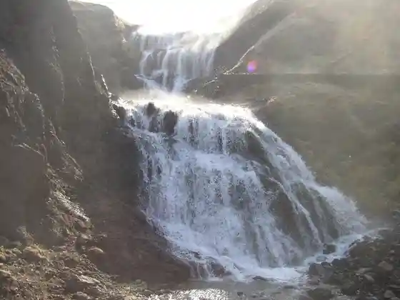

Miyagoshi Ie Hanare Garden
Nakadomari, Aomori · 0173-57-9030 · Official / source link
Gongen Saki
Nakadomari, Aomori · 0173-57-2111 · Official / source link

Cho Kan Dai
Nakadomari, Aomori · 0173-64-2111 · Official / source link
Nanatsu Taki
Nakadomari, Aomori · 0173-57-2111 · Official / source link

Tsugaru Dento Kin Ta Mamezo Ningyogeki Ba Shiata
Nakadomari, Aomori · 0173-58-3573 · Official / source link
Shosetsu (Tsugaru) no Zo Memorial Museum
Nakadomari, Aomori · 0173-64-3588 · Official / source link
Roadside Station Kodomari (Pontomari)
Nakadomari, Aomori · 0173-27-9300 · Official / source link
Fudo Falls
Nakadomari, Aomori · 0173-57-2111 · Official / source link
Ori Koshi Nai Oto Campground
Nakadomari, Aomori · Official / source link
Nakadomari Sogo Fukushi Kenko Center Yu Rapa ~ Ku
Nakadomari, Aomori · 0173-23-0132 · Official / source link
Nakadomari Tokusambutsu Chokubai Tokoro Pyua
Nakadomari, Aomori · 0173-57-5054 · Official / source link
Kodomari Marin Park Beach
Nakadomari, Aomori · 0173-57-2111 · Official / source link
Ori Koshi Nai Beach
Nakadomari, Aomori · 0173-57-2111 · Official / source link
Osawa Nai Tame Ike Park
Nakadomari, Aomori · 0173-57-2111 · Official / source link
Raion Kaido
Nakadomari, Aomori · 0173-57-2111 · Official / source link
Shichihei Lookout
Nakadomari, Aomori · 0173-57-2111 · Official / source link
Toyoshima Kumano Miya
Nakadomari, Aomori · 0172-32-2407 · Official / source link